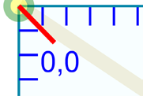
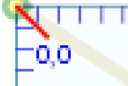

Проблемы растра
zoom +100%

zoom +400%

Преимущество векторов
Преимущества SVG
-
Возможность легко создавать графику (редакторы Inkscape, CorelDrow и
др.)
- Open source ( на основе стандарта XML)
- Open standard - не зависит от вендоров
- Accessibility - легкость использования, доступность
-
Легкость изучения - технология схожа с html/css и управляется js
- Поддержка всеми основными браузерами
Недостатки
- чем больше мелких деталей, тем больше размер файла
- для правильного отображения нужна загрузка всего файла
- плохая поддержка старыми браузерами (до 2010г)
Валидация
валидатор
SVG и HTML, CSS, Jscript
-
в одной ссылке можно размещать множество изображений svg, но только
одно растровое изображение
-
в HTML можно вставлять код SVG или подключать внешний файл
-
внутри SVG можно вставить HTML (внутри тегов foreignObject )
-
SVG подключает CSS, вставляет и вставляет как атрибуты свойства CSS
Анимация и интерактивность SVG
- формат имеет встроенные средства для анимации ( JS)
-
внешние библиотеки
Анимация контуров
Методы встраивания SVG в HTML
Элементы embed и object относятся к той же самой категории, что и
изображения (img), и фреймы (Iframe), а именно — строчные элементы с
замещаемым контентом
-
Использование <object>
<object
type="image/svg+xml"
data="SvgImg.svg"
width="200"
height="200"
>
</object>
-
+ применение таблицы стилей CSS, но стили должны быть прописаны
или в самом SVG файле, или подключены внешним стилем в SVG в
начале файла
- + скрипты
- + SVG анимации
- + интерактивные SVG анимации
- + кеширование
- + max поддержка браузерам
-
Использование <iframe>
<iframe
src="SvgImg.svg"
>
</iframe>
- + полностью отделяеть SVG и скрипты
-
-- доступ к другому окну имеет сложности из-за ограничений
безопасности в большинсте браузеров
-
Использование <img>
<img
src="image.svg"
width="200"
height="200"
alt="image description"
>
- + можно задать высоту и ширину
- + SVG анимации
- из-за ограничений безопасности в большинсте браузеров:
- -- нет JS
- -- нет CSS
- -- нет интерактивной SVG анимации
-
-- IE9, Safari, Chrome могут требовать подключения внешнего CSS
-
inline
<svg
width="300px"
height="300px"
xmlns="http://www.w3.
org/2000/svg"
>
<text
x="10"
y="50"
font-size="30">
My SVG
</text>
</svg>
- + применение таблицы стилей CSS
- + скрипты
- + SVG анимации
- + интерактивные SVG анимации
- -- кеширование //лучше подключать файлами
-
css background-image
.anyElement {
background-image:
url(image.svg);
}
- + можно задать высоту и ширину
- + SVG анимации
- -- нет CSS
- -- нет JS
- -- нет интерактивной SVG анимации
-
ВНЕ СПЕЦИФИКАЦИИ - Использование <embed>
embed был разработан и использовался в браузере Netscape не
вошел в спецификацию Html 4.01 но тем не менее часто используется